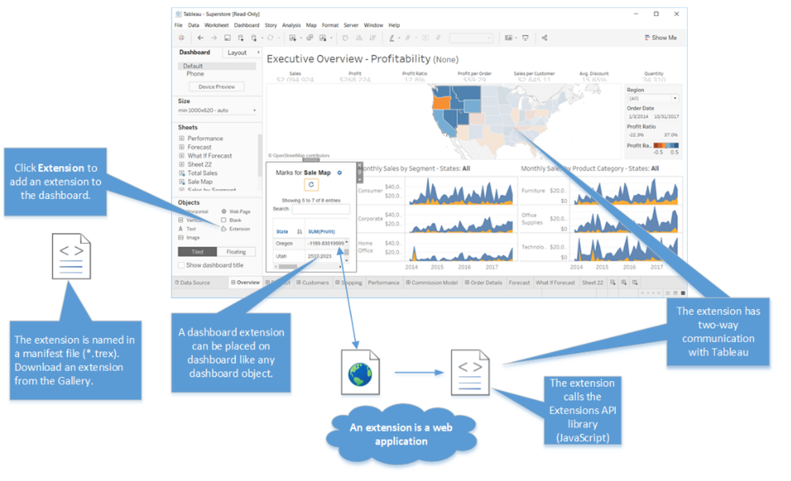
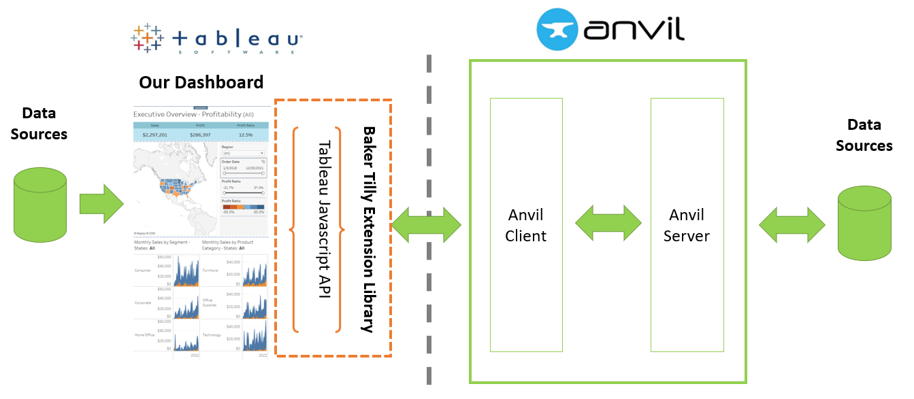

Platform Overview
This is a python library that allows users to create Tableau extensions with Anvil using only Python.
What's Anvil?
Anvil is a Python-based, full stack web framework used to rapidly develop and deploy web applications.
What's a Tableau extension?
In Tableau’s own words,
“The Extension API enables customer to integrate and interact with data from other applications directly in Tableau”
...in other words
Tableau dashboard extensions are web applications that have two-way communication with the dashboard. They enable all sorts of scenarios, like letting you integrate Tableau with custom applications, making possible for you to modify the data for a viz, or even creating custom visualizations inside the dashboard.
What can you do with an extension?
Because Tableau extensions are web applications, there is a wide variety of different things you can do with them. Things like:
Integrate with third-party APIs inside the dashboard
Use third-party charting libraries like
visjsord3to add custom visualizationsEnable write-back functionality so users can modify data in a viz and have that change automatically update the source data
Build custom viz and interactivity types, such as a filter replacement and custom interfaces
To get a taste of what other people have built, check out some dashboard extensions on the Tableau Exchange
This Library's Objective: Investment to Insight
The primary purpose of this Python library is to reduce the amount of time required to go from investment to insight
Important
By making Tableau Extensions more accessible to organizations, Dashboard Developers are unleashed to do more. “More” includes new integrations, sophisticated user interfaces, and more advanced data tools.
This Python library accomplishes this by:
Creating a Pythonic representation of the Tableau Dashboard
Enabling one-Click extension deployment
A modern, efficient development experience
Enterprise-ready user management and access controls
Transparent, real-time logging and error handling
Secure Server environment
The below image outlines how this Python library is related to Anvil and Tableau.
Now that you have a good handle on the extensions framework, head over to the Getting Started guide for a short walkthrough of what the development experience is like.
Further topics
Extension API vs. Embedding JavaScript API
Related, but separate from the Extensions API is the Embedding JavaScript API.
While the Extension API puts web applications into a tableau dashboard, the Embedding Javascript API puts tableau dashboards into a web application.
You can use the Embedding JavaScript API for embedding Tableau dashboards in web pages (for example, blog posts), or in line of business applications.
You can use the Extensions API for integrating web applications into zones in Tableau dashboards.
The python documentation you are currently reading is related to the Extensions API and not the Embedding Javascript API.
Challenges with Extension Development
While the Tableau extension JS API is powerful, extension development has challenges. For data teams with Tableau and Python experience,
There is a significant learning curve to get started
Extensions require a significant amount of technical knowledge and supporting tools to operate. This includes networking, dev ops, JS programing, security, etc.
During several attended in-person trainings from Tableau, it’s rare for developers to make it through the tutorial and many gave up along the way
Lots of effort is required to stand up a development environment (chrome headless / npm / sdks)